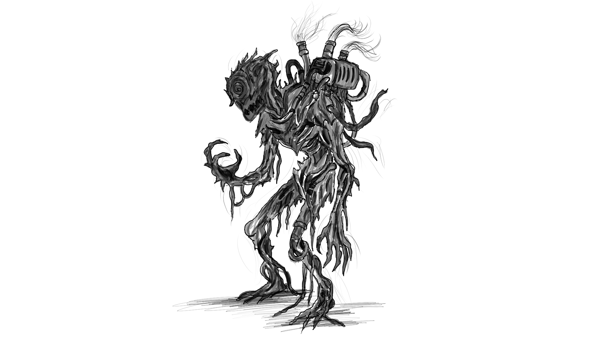

Kael'Thorn
Arte conceptual del enemigo principal del videojuego.
Ala Escarlata
Arte conceptual del enemigo secundario del videojuego.

Minerales
Arte conceptual de los minerales del dungeon tierra.

Minerales
Arte conceptual de los minerales del dungeon fuego.
Tonicos magicos
Arte conceptual de los tonicos magicos.

Totem
Arte conceptual del totem del Fénix al ser derrotado.

Dungeon Fuego
Arte conceptual de la entrada al dungeon de fuego.

Dungeon Tierra
Arte conceptual de la entrada al dungeon de tierra.

Dungeon Viento
Arte conceptual de la entrada al dungeon de viento.
Dungeon Final
Arte conceptual de la entrada al dungeon final del videojuego.

Flauta de viento
Arte conceptual de un item del dungeon viento.

Capullo de Resurección
Arte conceptual de los capullos de los spawnpoints al morir.

Cadenas Raíz
Arte conceptual de un item de la dungeon tierra.